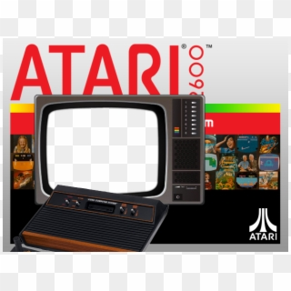
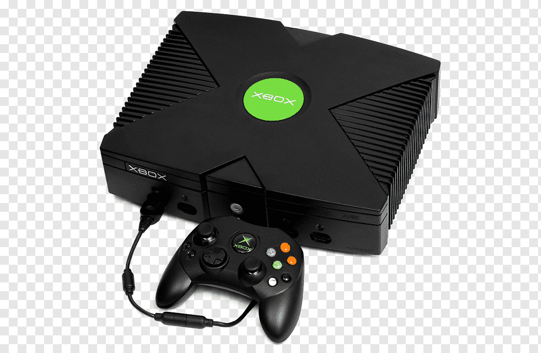
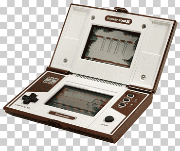
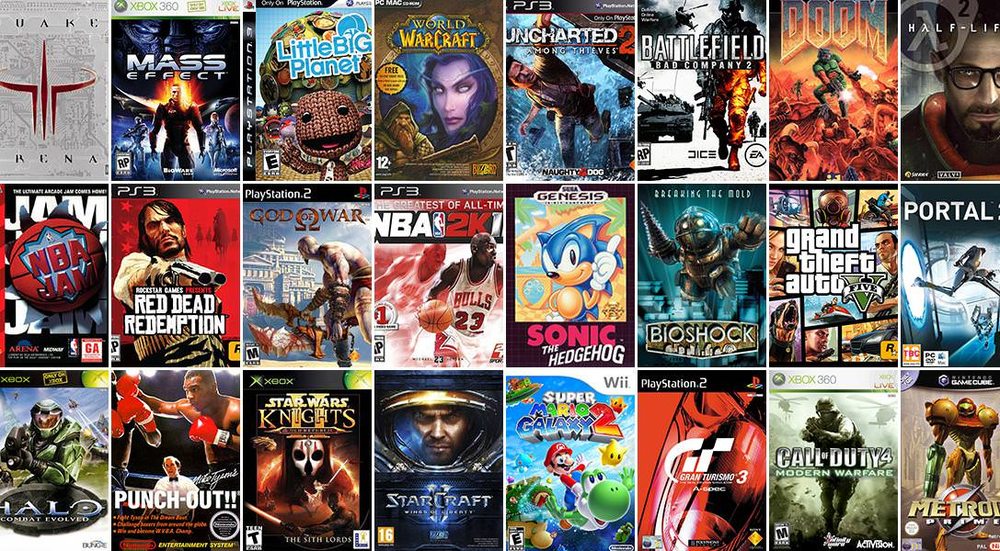
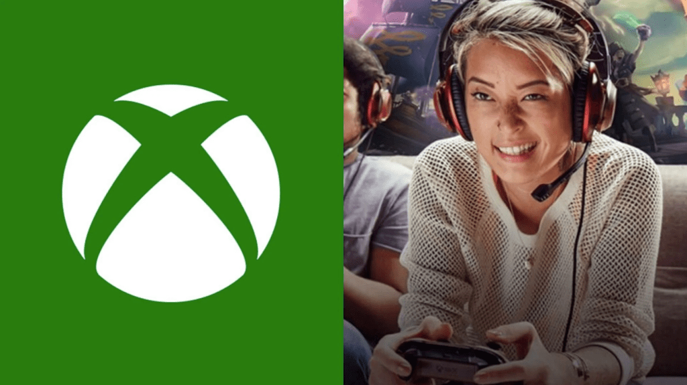

Tema 2 "Videojuego."
Que son los Videojuego
Es un juego electrónico en el que una o más personas
interactúan por medio de un controlador,con un dispositivo
que muestra imágenes de vídeo.Este dispositivo electrónico,
conocido genéricamente como «plataforma»,puede ser
una computadora, una máquina arcade,una videoconsola o
un dispositivo portátil,como por ejemplo un teléfono móvil, teléfono inteligente o tableta.
La industria de los videojuegos es una de las principales en elmundo del arte y del
entretenimiento.
Hitoria
Los orígenes del videojuego se remontan a la década de 1950, cuando poco después
de la aparición de las primeras computadoras electrónicas tras el fin de la Segunda
Guerra Mundial, se llevaron a cabo los primeros intentos por implementar programas de
carácter lúdico. Así, fueron creados el Nim (1951) o el Oxo (1952), juegos electrónicos
que aún no pueden ser denominados videojuegos, y el Tennis for Two (1958) o el
Spacewar! (1962), auténticos pioneros del géneros. Todos
ellos eran todavía prototipos, juegos muy simples y de
carácter experimental que no llegaron a comercializarse,
entre otras cosas, porque funcionaban en unas máquinas
que solo estaban disponibles en universidades o en institutos
de investigación. No sería hasta la década de los 70 en que,
con el descenso de los costes de fabricación, aparecieron
las primeras máquinas y los primeros videojuegos dirigidos
al gran público. En los años 1980, la empresa
norteamericana Atari tuvo que compartir su dominio en la industria del videojuego con
dos compañías llegadas de Japón: Nintendo (con su famosa consola NES) y SEGA (con
la Master System). Paralelamente, surgió una generación de ordenadores personales
asequibles y con capacidades gráficas que llegaron a los hogares de millones de
familias, como fueron el Spectrum, el Amstrad CPC, el Commodore 64 o el MSX. A partir
de entonces, los videojuegos empezaron a convertirse en una poderosa industria. Fue
además una época muy creativa para los desarrolladores de videojuegos; muchos de
los principales géneros que existen hoy en día (conducción, lucha, plataformas,
estrategia, aventura...) tomaron forma en esta década. Por otra parte, aparecieron
también las primeras consolas de bolsillo, también conocidas como «maquinitas», que
aunque hasta la llegada de la Game Boy de Nintendo (1989) solo ejecutaban un juego
cada una, alcanzaron gran popularidad entre los más jóvenes.Los años 1990 traen el
salto a la tecnología de 16-bit (como la SNES y la Mega Drive), lo que traía consigo
importantes mejoras gráficas. Entra en escena el gigante Sony con su primera
PlayStation (1994), mientras Nintendo y Sega actualizan sus máquinas (Nintendo 64 y
Sega Saturn). En cuanto a las computadoras, el progreso de los PC termina por barrer
del mapa a los demás sistemas salvo el de Apple. Aparecen juegos cada vez más
avanzados tecnológicamente, como los juegos de tiradores, también llamados shooters
en 3D.  Estos comenzaron siendo en tercera persona pero a
Estos comenzaron siendo en tercera persona pero a
través de la implementación de técnicas de cámara en
primera persona, se convirtieron en lo que a dia de hoy se
denomina Juegos de tiradores en primera persona o FPS.
En el año 2002 entra Microsoft en el sector de las
videoconsolas con su Xbox, y en el 2006 Nintendo lanza su innovadora Wii. Entretanto,
Sony actualiza su exitosa PlayStation (versiones II y III), y en los PC, gracias a la
expansión del Internet, cobran protagonismo los juegos en línea y multijugador.Por
último, en la década de 2010 emergen como plataformas de juegos los dispositivos
táctiles portátiles, como los teléfonos inteligentes y las tabletas, llegando a un público
muy amplio. Por otro lado, varias empresas tecnológicas empiezan a desarrollar cascos
de realidad virtual, que prometen traer nuevas experiencias al mundo del
entretenimiento electrónico.
Plataformas

Los distintos tipos de dispositivo en los que se ejecutan los
videojuegos se conocen como plataformas. Los cuatro tipos
de plataformas más populares son el PC, las videoconsolas,
los dispositivos portátiles y las máquinas arcade.Las
videoconsolas o consolas de videojuegos son aparatos
electrónicos domésticos destinados exclusivamente a
reproducir videojuegos. Creadas por diversas empresas 
desde los años 70, han generado
un inmenso negocio de
trascendencia histórica en la industria del entretenimiento. La
videoconsola por antonomasia es un aparato de sobremesa
que se conecta a un televisor para la visualización de sus
imágenes, pero existen también modelos de bolsillo con pantalla incluida, conocidos
como videoconsolas portátiles.El PC u ordenador personal es también una plataforma
de videojuegos, pero como su función no es solo ejecutar videojuegos, no se considera
como videoconsola. El PC no entra en ninguna generación,
ya que cada pocos meses salen nuevas piezas que
modifican sus prestaciones. El PC por regla general puede
ser mucho más potente que cualquier consola del mercado.
Los más potentes soportan modos gráficos con resoluciones
y efectos de postprocesamiento gráfico muy superiores a
cualquier consola. Las máquinas recreativas de videojuegos están disponibles en
lugares públicos de diversión, centros comerciales, restaurantes, bares, o salones
recreativos especializados. En los años 1980 y 90 del siglo pasado disfrutaron de un
alto grado de popularidad al ser entonces el tipo de plataforma más avanzado
técnicamente. Los progresos tecnológicos en las plataformas domésticas han supuesto
a comienzos del siglo XXI una cierta decadencia en el uso de las máquinas arcade.Las
videoconsolas portátiles y otros
aparatos de bolsillo cuentan con la
capacidad para reproducir videojuegos. Entre estos últimos destacan
hoy en día los teléfonos móviles (en particular los teléfonos
inteligentes) que, sin ser los videojuegos su función primaria, los han
ido incorporando a medida que se han ido incrementando sus
prestaciones técnicas. Otros dispositivos portátiles de creciente
popularidad en los últimos años son las tabletas.
Géneros
Los se pueden clasificar en géneros atendiendo a factores como el sistema de juego, el
tipo de interactividad con el jugador, sus objetivos, etc. La evolución de los videojuegos
desde sus comienzos ha dado lugar a una variedad creciente y cambiante de géneros,
muchas veces en relación con lo que los avances en la tecnología han ido haciendo
posible. Entre los géneros de videojuegos más populares están los de acción,
estrategia, rol, aventura, rompecabezas, simulación, deportes o carreras, cada uno de
ellos con varios subgéneros. Por otro lado, hoy en día son habituales los videojuegos
que toman elementos de más de un género, lo que ha dado lugar a géneros mixtos (por
ejemplo rol-acción, aventura-acción, etc.).>  Junto a los
Junto a los
géneros, existen otras formas de clasificar o caracterizar los
juegos como puede ser por su temática (fantástico-medieval,
futurista, de guerra...), su complejidad (juegos AAA, juegos
casuales...), su finalidad (educativos, promocionales,
artísticos...), tipo de desarrollo, etc.Por otra parte, también
se distingue a unos juegos de otros, incluso dentro de un
mismo género, por la perspectiva visual que adoptan (o
dicho de otra manera, la posición de la cámara). Así, hay
juegos con perspectiva 2D (ya sea con proyección paralela,
vista lateral o vista cenital), 2.5D (mediante proyección
isométrica, oblicua, o parallax scrolling, entre otras), y 3D (en
perspectiva fija, en primera persona, o en tercera persona).
Multijugador
 En muchos juegos se puede encontrar la opción de
En muchos juegos se puede encontrar la opción de
multijugador, es decir, que varias personas puedan participar
simultáneamente en la misma partida, ya sea empleando
todos la misma máquina (como suele ocurrir con las
videoconsolas) o bien usando cada uno su propio dispositivo
(el caso habitual en los PC o dispositivos portátiles, en lo que
se conoce como videojuegos en
línea). Existen juegos en que un
jugador humano se enfrenta
contra otros jugadores
controlados por la máquina,
mediante inteligencia artificial, pero en este caso no se
considera que sea un videojuego multijugador. Por último,
hay videojuegos que están pensados para congregar a un
gran número de jugadores de todo el mundo conectados a través de Internet, son los
conocidos como videojuegos MMO (de massive multiplayer online).